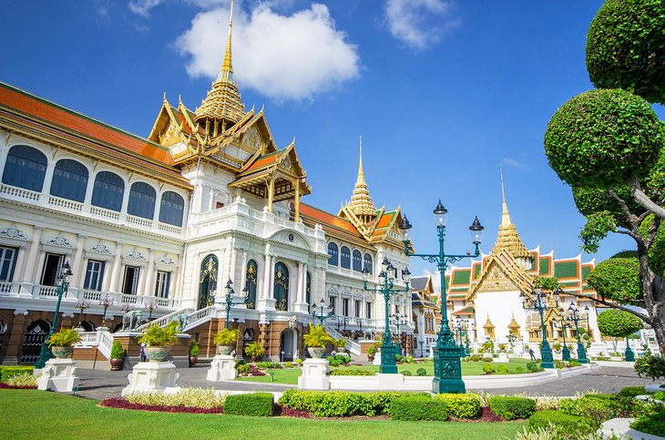

Locations
Seattle


Geographical Location: North America
Seattle, nestled in the Pacific Northwest, harmoniously blends city living with nature's beauty. The iconic Space Needle stands tall, offering sweeping views of mountains and water. Seattle's cultural scene thrives with museums, theaters, and a rich music history, while its commitment to sustainability and outdoor activities makes it a haven for nature lovers.
Seattle, birthplace of Starbucks, is a coffee lover's paradise. Distinct neighborhoods like Pioneer Square and Capitol Hill offer diverse experiences, and Pike Place Market bustles with fresh seafood and artisanal goods. Seattle's fusion of innovation, natural allure, and cultural richness makes it a compelling and inviting city.
Photo Gallery

The Space Needle is an iconic Seattle landmark, soaring above the city with its futuristic design and offering stunning panoramic views of the surrounding landscape.

Pike Place Market is a bustling and historic marketplace in Seattle, renowned for its vibrant atmosphere, fresh seafood, and artisanal goods.

Mount Rainier is a majestic stratovolcano towering over the Pacific Northwest, known for its year-round snow-capped peak and breathtaking alpine landscapes.
Bangkok


Geographical Location: Southeast Asia
Bangkok, Thailand’s capital, is a large city known for ornate shrines and vibrant street life. It is officially known in Thai as Krung Thep Maha Nakhon and colloquially as Krung Thep.
Bangkok welcomes more visitors than any other city in the world and it doesn’t take long to realize why. Bangkok is a city of contrasts with action at every turn. Marvel at the gleaming temples, catch a tuk tuk through bustling Chinatown or take a longtail boat through floating markets. Food is another Bangkok highlight, from local dishes served at humble street stalls to haute cuisine at romantic rooftop restaurants.
Photo Gallery

Khlong Lat Mayom, one of the best floating markets in Bangkok.It is most famous for its food. Try snakehead fish and the shrimps.
The Grand Palace is a complex of buildings at the heart of Bangkok.

Khao San road, which now represents a series of streets, is a place in downtown Bangkok where backpackers and tourists are immediately drawn to from when they first touch down in the airport.

Wat Arun is one of the most popular and well-known places of worship. Famous for its iridescent glow when first light hits its porcelain finish at dawn, it also resembles an ancient city at first glance.
Los Angeles


Geographical Location: North America
Los Angeles is a sprawling Southern California city and the center of the nation’s film and television industry. Near its iconic Hollywood sign, studios such as Paramount Pictures, Universal and Warner Brothers offer behind-the-scenes tours. On Hollywood Boulevard, TCL Chinese Theatre displays celebrities’ hand- and footprints, the Walk of Fame honors thousands of luminaries and vendors sell maps to stars’ homes.
Los Angeles is famous for its idyllic, warm climate. Temperatures are high but pleasant all year round while rainfall is uncommon and mainly limited to the winter months.
Photo Gallery

The view of the beautiful downtown LA city.

The LA skyline set against the San Gabriel Mountains in the background.

Los Angeles City Hall with twin towns fingerpost

Los angeles california hollywood sign close up

View of Houses on a Hill on Highland Ave, Los Angeles, California, USA